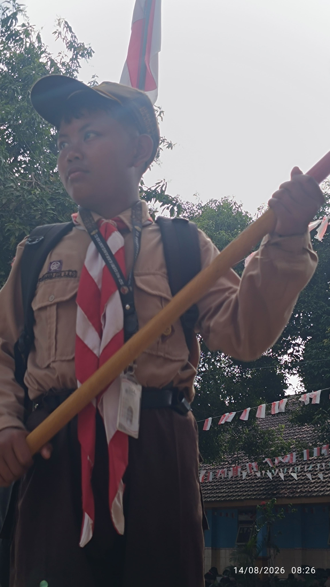
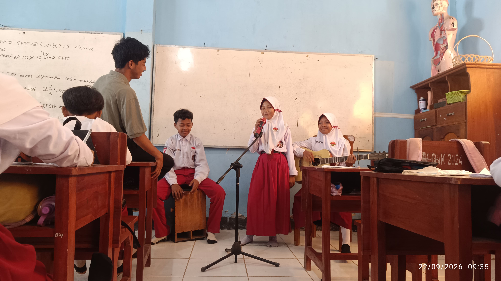

Setiap anak memiliki bakat uniknya masing-masing. Di SDN Karanganyar 02, kami menyediakan berbagai wadah ekstrakurikuler untuk menyalurkan minat dan mengasah bakat siswa di luar jam pelajaran akademik.
Beragam Pilihan Ekstrakurikuler
Mulai dari kegiatan seni seperti menari dan menyanyi, hingga bidang olahraga seperti voli, futsal, dan atletik. Tidak ketinggalan, kegiatan kepramukaan juga menjadi wadah utama untuk melatih kemandirian, kedisiplinan, dan jiwa kepemimpinan siswa.
Kegiatan ini dibimbing langsung oleh guru-guru yang berkompeten dan berpengalaman, sehingga potensi siswa dapat berkembang secara optimal.
Dokumentasi Kegiatan


Prestasi demi prestasi terus ditorehkan. Namun yang terpenting, melalui kegiatan ini, siswa belajar tentang kerja sama tim, sportivitas, dan pantang menyerah.
arrow_back Kembali ke Halaman Utama